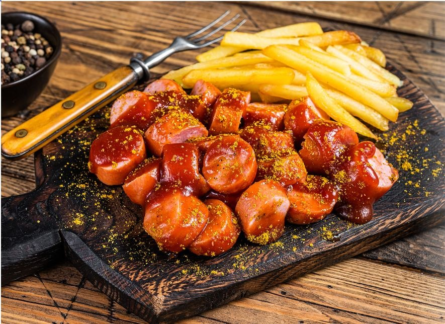

Deutsche Currywurst
Go Back

Description
Currywurst is a popular German street food made of sliced, steamed, then fried pork sausage (usually Bratwurst) topped with a spiced ketchup-based curry sauce and dusted with curry powder. It’s typically served with French fries or a bread roll (Brötchen).
Invented in Berlin in 1949, it has since become a culinary icon of Germany — hearty, quick, and full of flavor. Enough talk...let's dive into creating this.
Ingredients
Sausage and Curry Sauce
- 4 German Bratwursts (pork is traditional)
- 1–2 tbsp oil or butter (for frying)
- 1 cup (240 g) ketchup (or tomato purée for a less sweet version)
- 1 small onion, finely chopped
- 1 tbsp oil (for sautéing)
- 2–3 tsp curry powder (plus extra for sprinkling on top)
- 1–2 tsp paprika (sweet, not smoked)
- 1/2 tsp chili powder or cayenne (optional, for heat)
- 1 tsp sugar (to balance acidity, optional)
- 1 tsp vinegar or Worcestershire sauce (for tang)
- Salt and pepper, to taste
For Serving
- Extra curry powder (for dusting on top)
- French fries or a Brötchen (bread roll) on the side
Steps
Step 1: Cook the Sausage
- Heat a little oil or butter in a pan over medium heat.
- Add the Bratwursts and fry until golden brown on all sides and cooked through (about 8–10 minutes).
- Remove from pan and let rest for a minute.
- Slice into bite-sized pieces (about ½–1 inch thick).
Step 2: Make the Curry Sauce
- In the same pan, heat 1 tbsp oil and sauté the chopped onion until soft and golden.
- Stir in curry powder and paprika, toasting for 30 seconds to release flavor.
- Add ketchup (or tomato purée), then stir in sugar, vinegar/Worcestershire, and a pinch of salt & pepper.
- Simmer for 5–10 minutes until thickened.
- Taste and adjust:
Step 3: Assemble the Currywurst
- Place the sliced sausages on a plate.
- Spoon the hot curry sauce generously over the top.
- Sprinkle with a little extra curry powder.
- Serve immediately with French fries or a crusty Brötchen (bread roll).